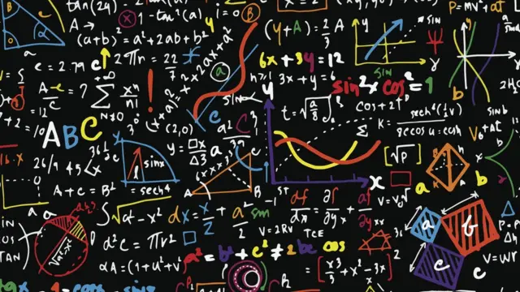

En Temas Selectos de Matem ticas II se busca dar otra perspectiva del c lculo al estudiantado y ahondar en su estudio, retomando y dando seguimiento a contenidos de UAC previas, especialmente a lo abordado en Pensamiento Matem tico III y Temas Selectos de Matem ticas I. Primero se presenta el planteamiento de Sistemas Din micos Discretos, considerando composiciones de funciones y se ahondan en ideas de caos y fractalidad para posteriormente dar continuidad a conceptos planteados previamente, como lo son el Teorema Fundamental del C lculo y con ello profundizar en el estudio de la integral, el c lculo del rea debajo de una curva y con ello abordar ideas fundamentales que dan surgimiento a las ecuaciones diferenciales y algunos m todos num ricos tiles para el estudiantado. Las anotaciones did cticas est n orientadas para que se deduzca el enfoque adecuado que permita trabajar la estructura, el orden y las relaciones a trav s de la profundizaci n de conceptos formales utilizados en el recurso sociocognitivo de Pensamiento Matem tico, considerando particularmente elementos del C lculo Diferencial e Integral, as como algunas ideas de An lisis Matem tico.
